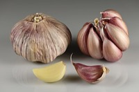

ニンニクの生産量 都道府県ランキング
全11都道府県の順位と収穫量
ニンニクの収穫量が全国で最も多いのは青森県で、1万1,700 tです。全国（1万7,600 t）の66%を占めます。

| 順位 | 都道府県 | 収穫量 | 全国に占める割合 |
|---|---|---|---|
| 1位 | 青森県 | 1万1,700 t | 66% |
| 2位 | 北海道 | 1,000 t | 5.7% |
| 3位 | 香川県 | 509 t | 2.9% |
| 4位 | 岩手県 | 353 t | 2.0% |
| 5位 | 鹿児島県 | 324 t | 1.8% |
| 6位 | 秋田県 | 265 t | 1.5% |
| 7位 | 福島県 | 256 t | 1.5% |
| 8位 | 宮崎県 | 162 t | 0.9% |
| 9位 | 大分県 | 159 t | 0.9% |
| 10位 | 熊本県 | 99 t | 0.6% |
| 11位 | 徳島県 | 95 t | 0.5% |
PR

ニンニクの生産量の推移（令和2年産〜令和6年産）
全国の収穫量は、令和2年産の2万1,200 tから令和6年産の1万7,600 tへ、17%減りました。期間中、1位は一貫して青森県です。
| 年 | 全国 | 1位 | 2位 | 3位 |
|---|---|---|---|---|
| 令和6年産 | 1万7,600 t | 青森県1万1,700 t | 北海道1,000 t | 香川県509 t |
| 令和5年産 | 2万200 t | 青森県1万3,400 t | 北海道967 t | 香川県649 t |
| 令和4年産 | 2万400 t | 青森県1万3,500 t | 北海道973 t | 香川県728 t |
| 令和3年産 | 2万200 t | 青森県1万3,500 t | 北海道898 t | 香川県751 t |
| 令和2年産 | 2万1,200 t | 青森県1万4,300 t | 香川県844 t | 北海道831 t |
この数字について
- 分類：ヒガンバナ科
- 全国の収穫量：1万7,600 t
- この数字が表すもの：収穫量（収穫された重量）
- 調査：作物統計調査 作況調査（野菜） 令和6年産
- 11県分を調査（調査していない県は順位に入りません）
ニンニクの生産量について、よくある質問
- ニンニクの生産量が日本一の都道府県はどこですか？
- 青森県です。作物統計調査 作況調査（野菜）（令和6年産）で1万1,700 tでした。
- ニンニクの生産量ランキング2位・3位はどこですか？
- 2位は北海道（1,000 t）、3位は香川県（509 t）です。
- ニンニクの生産量ランキング4位・5位はどこですか？
- 4位は岩手県（353 t）、5位は鹿児島県（324 t）です。ニンニクの全11県の順位は上の表のとおりです。
- ニンニクの全国の生産量はどれくらいですか？
- 1万7,600 t（令和6年産）です。